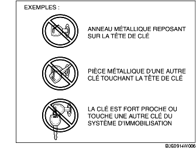

AVANT-PROPOS [SYSTEM D'IMMOBILISATION]
B3E090201077W01
• Le diagnostic d'anomalies est automatiquement activé lorsque le contacteur d'allumage passe de la position LOCK (ACC) à la position ON (START).
• Si les résultats du diagnostic d'anomalies détectent une anomalie, le témoin de sécurité affiche un DTC et le PCM enregistre le DTC. Les DTC enregistrés dans le PCM peuvent être contrôlés à l'aide du WDS ou équivalent.
• Les DTC du système d'immobilisation enregistrés dans le PCM sont effacés lorsque le contacteur d'allumage passe de la position ON à la position LOCK (ACC).
• Certains DTC ne peuvent être vérifiés qu'à l'aide du WDS ou équivalent, pas avec le témoin de sécurité.
• La fonction de contrôle de PID/données peut être utilisée pour vérifier le nombre de clés enregistrées pour un même véhicule.
• Si les DTC ne s'affichent, bien que le moteur ne démarre, effectuer le dépistage des pannes à partir des symptômes suivant :
-
- PROCEDURE N° 3, REFUS DE DEMARRER [ZJ, Z6]
-
- PROCEDURE N° 3, REFUS DE DEMARRER [LF]
-
Attention
-
• Toujours utiliser le WDS ou équivalent pour vérifier les DTC, même si les DTC sont contrôlés par l'affichage du témoin de sécurité. Si le témoin de sécurité est lui-même la source de l'anomalie, il est possible qu'un DTC ne soit pas correctement affiché.
-
• Toujours utiliser le WDS ou équivalent pour vérifier les DTC, certains DTC ne pouvant être vérifiés à l'aide du témoin de sécurité.
-
• Si un des éléments suivants se trouve en contact ou à proximité de la tête de clé, la communication des signaux entre la clé et le véhicule est affectée, empêchant le moteur de démarrer. Ne pas démarrer le moteur si un des éléments suivants se trouve en contact ou à proximité de la tête de clé.
-
- Tout objet métallique
-
- Clés de secours et clés d'autres véhicules équipées d'un système d'immobilisation
-
- Tout appareil électronique, ou toute carte de crédit ou autre présentant des bandes magnétiques

-
Remarque
-
• Si plusieurs DTC sont détectés suite au diagnostic d'anomalies, seul le DTC avec le numéro le plus petit sera affiché par le témoin de sécurité. Le PCM enregistre plusieurs DTC simultanément.
-
• Si au moins deux DTC du système d'immobilisation sont vérifiés, réparer d'abord la pièce indiquée par le DTC du témoin de sécurité. Une fois terminée la réparation d'un élément, faire passer le contacteur d'allumage de la position LOCK à la position ON, et effectuer le diagnostic d'anomalies du système d'immobilisation.